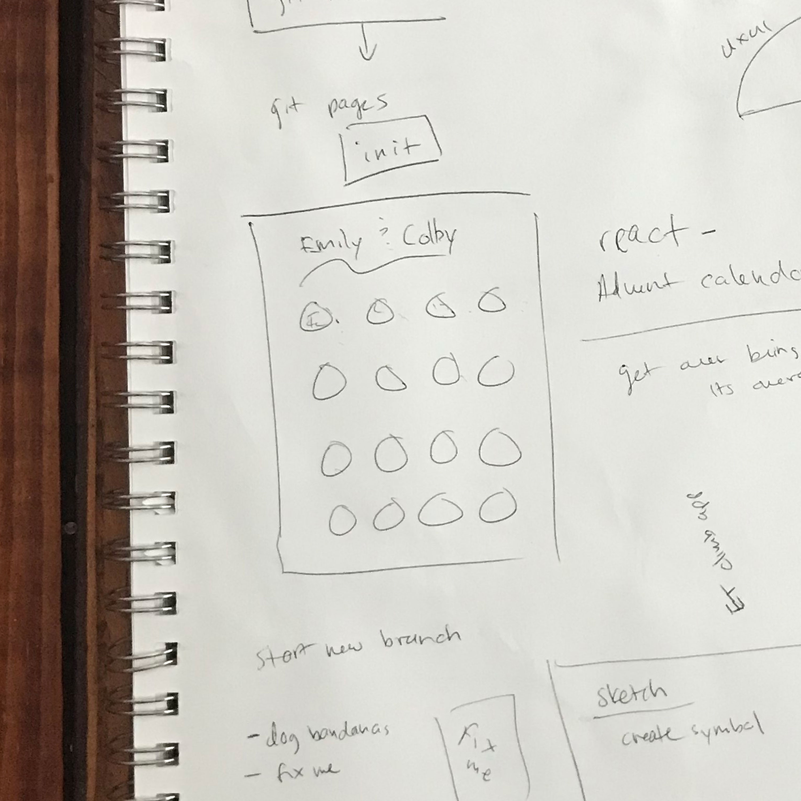
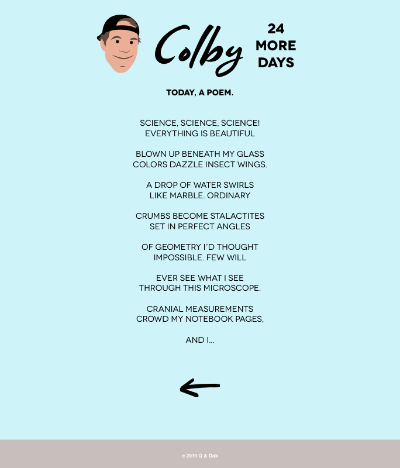
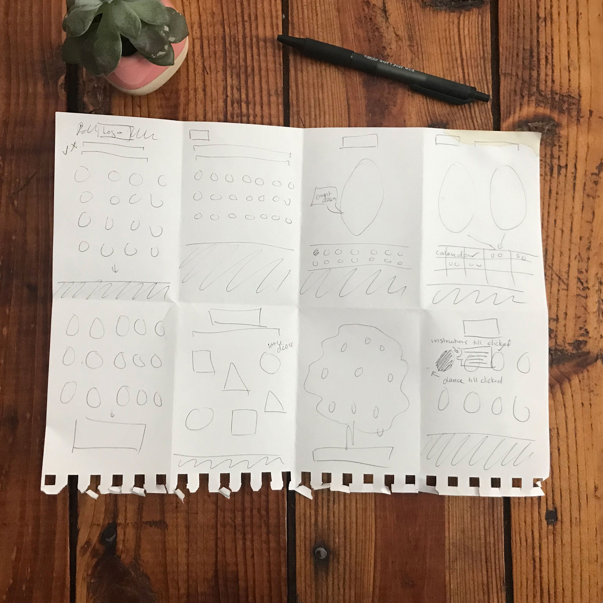
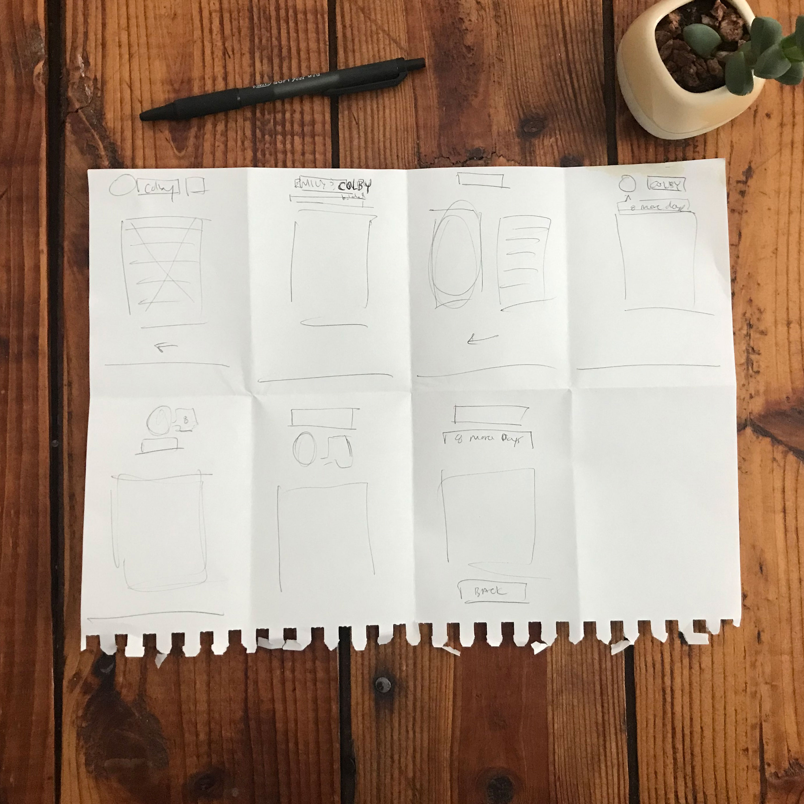
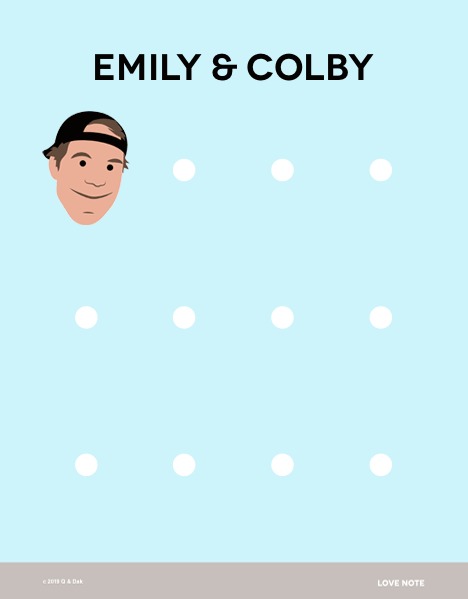
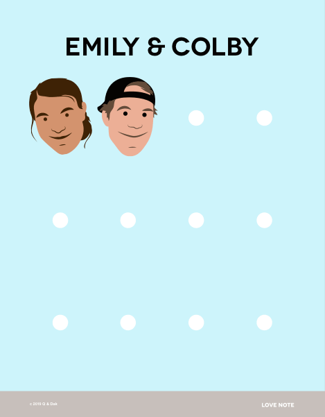
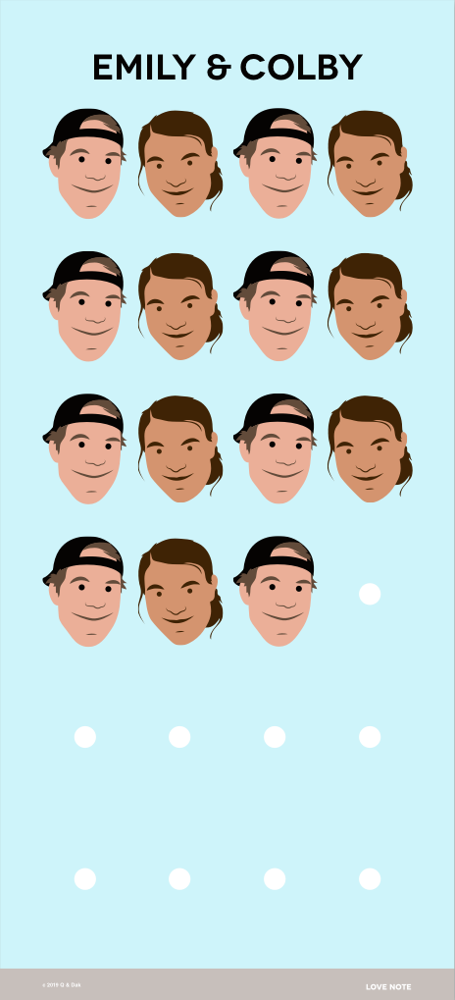

Second Project
Emily & Colby.
April 2019
Emily is one of my best friends. We met 13 years ago in college at the first day of ultimate frisbee tryouts. Colby is also one of my best friends along with Mark who happens to be Colby's best man. We met 10 years ago playing club ultimate frisbee after college.
Emily and Colby will be getting married on June 1, 2019.
The Premise
The goal of this project is for Mark and I to create gift for our two best friends while practicing our recent web developing skills. I've been working on front end skills and Mark has been working on back end skills. We decided on a website full of fun memories with our two friends. We wanted a home page with perhaps a photo of the happy couple and a navigation bar at the top that holds fun topics such as poems and photographs. The navigation items would link to pages where there would be a list of funny personalized poems or cherished photographs from our friendships over the years. Pretty standard construction.
Going Further
As I've been looking more into UX/UI design, I wondered how Mark and I could make this experience really special. Could we drop what we know about conventional websites and create something more personal for our friends and their celebration? So I started brainstorming... we want to give our friends a wedding gift (a website) full of small gifts (poems, photos, etc). And their wedding is coming up, which means we are counting down the days. Huh, counting down days till a celebration... with gifts invovled. AN ADVENT CALENDAR! This website could be like an Advent calendar!
-
 An example of an Advent calendar made with a different chocolate as the gift each day.
An example of an Advent calendar made with a different chocolate as the gift each day. -
Initial wireframe showing an Advent calendar style layout.
To The Races
I was so exicted about this idea that I jumped right into Sketch and started to design and prototype. I skipped the wireframing process, except for the one wireframe photographed above, because the overall concept seemed so simple. The home page has a heading, a subheading of instructions, a grid of faces mimicking an advent calendar and a small footer. The image on the left shows the basic homepage structure. Mark and I then discussed how neat it would be if we could lock all of the faces and each day a new one would be unlocked and made clickable. This is shown better by the image on the right. The faded faces are locked. Each day, when a face becomes unlocked, the colors pop back up to 100%. The faces unlock left to right, top to bottom.
-
 Home page with all faces unlocked.
Home page with all faces unlocked. -
 Home page with only once face unlocked and the rest locked.
Home page with only once face unlocked and the rest locked.
The secondary pages also seemed simple. Each secondary page would highlight either Emily or Colby, based on the face that was clicked on the home page. The title would simplfy to just one name, have a fun-sized small head, and a countdown to help Colby and Emily keep track of the days. The body would be either text or a photo follwed by a back button to return you to the home page and the small footer.
-
A Colby featured secondary page.
-
 An Emily featured secondary page.
An Emily featured secondary page.
Reign It In
As my initial excitement began to relax I started to realize some flaws in my design.
1) The faces unlock left to right and top to bottom. Like an advent calendar, we plan to have about a month's worth of faces. That means, about halfway through the month, the newest unlocked face would be undetectable until the viewers scroll down. For an actual advent calendar, which also typically moves from left to right and top to bottom, this is ok because the viewer can see the entire calendar. Its a phyical object that can be viewed as whole. My concern with having the newest unlocked faces move below 'the fold' is that excitement will be diminished if the viewer opens the page and sees nothing new at first glance... and perhaps the new unlocked face would even be forgotten and go unopened.
2) This website does require instruction at first, but the nature of this website is very repetitive. After the first day or two, the viewer will not require the instructions any longer because they will understand how the site is working. The instructions at the top of the home page take away from the simplicity of the design and push the exciting content further down the page.
3) The countdown on the secondary pages I believe is unnecessary and takes away from the simplicity of those pages as well. Because the home page is a grid, it shows all the existing gifts to be had. While it might not provide an exact countdown, the viewer can get an overall feel for the amount of days left by just a quick glance and visual comparison between the amount of faces locked and unlocked.
4) When a new face is unlocked, it blends in with the other unlocked faces. I want this new unlocked face to be exciting and to let the viewer know 'Hey, I'm new, you haven't clicked on me yet, click on me!'.
I found quite a few ways to improve upon this initial design. Time to back up and give it another go! I'm not sure how the theme of this post went from wedding to horseback riding, but here we are.
Back In The Saddle
A video popped up in my YouTube rabbit hole about a wireframing exersise called Crazy Eights. What a good way to get me off the computer and doing something fun and tactile with some structure. Below are my Crazy Eights! I did one excersise for the home page (left) and one for the secondary page (right). I put a lot of thought into the issues I addressed above. I also tried some crazier ideas even if I didn't think they were what I was looking for, perhaps they would spark cool ideas that I didn't know were needed.
-
Crazy Eight exercise for the home page.
-
Crazy Eight exercise for the secondary page.
After I finished my Crazy Eights, I took time to review, analyze, mix and match. Before returning to the computer, I sketched even more about the flow of the site to make sure the direction was a smooth one. I had three concepts for how the homepage could function, so below I drew out each one and listed positives and negatives for each.
-
 Sketches of website flow options containing multiple layouts of both the home and secondary pages.
Sketches of website flow options containing multiple layouts of both the home and secondary pages. -
 Zoomed in view of website flow sketches with positives and negatives listed for each layout option.
Zoomed in view of website flow sketches with positives and negatives listed for each layout option.
I returned to Sketch with a clear direction. Below I will discuss my solutions to the earlier issues and then present my final working prototype!
1) To address the order in which the faces unlock and to keep the newest face visible and engaging, I decided to edit how the faces functioned within the grid. Now, the newest face will always appear in the top left space pushing older faces to the right. Once a face hits the far right spot on the page, it will bump down to the row below and so on. Since the faces shift, each spot now has to be prepared to hold a Colby or an Emaily face. I could no longer use faded versions of each face. I needed an element that was more universal, hence the circle. Similar to issue 1, I'll address issue 4 here. What does a person do when they are excited about something? Jump up and down. Shake with excitement. Since this is the emotion I hope to evoke when a new face is unlocked each day, I want that new face to shake back and forth before it is clicked. This will add excitement when the viewer opens the site and will be visually clear if there is a new gift the viewer has not clicked on yet. If the viewer misses a few days, they will open the site to 3 or 4 shaking heads. See below in my 'Frustrations About Sketch' section. This shaking animation can not be viewed in my prototype, so I created these images with screen shots, dropped into PS, then made the animations on top. As soon as I figure out how to have animations appear in the Sketch previews, I will update this post with an answer to that. The shaking new faces really does add clarity.
-
Colby's face has been unlocked but not yet clicked on. All other faces are not visble and therefore locked.
-
Colby's face has been unlocked and clicked on. A new face has been unlocked, Emily's, and has yet to be clicked on. All other faces are not visble and therefore locked.
2) The instructions are only necessary in the beginning of the viewers experience due to the sites repetition in function. For this reason, I added a splash screen before the home page. I call this page a 'LOVE NOTE' in the footer. Having the introduction on a splash screen allows for more space for the text and a more complete explanation. The text also offers subtle hints as to what the site will be about. I love this build up of intrigue. In case Colby or Emily do forget the instructions or just wish to view our little message again, I provide a link in the footers of the coming pages to return to this Love Note.
-
 Splash screen. Clicking the arrow will take the user to the home page.
Splash screen. Clicking the arrow will take the user to the home page. -
 Zoomed in view of the footer that will be on all pages of the website besides the splash screen.
Zoomed in view of the footer that will be on all pages of the website besides the splash screen.
3) I took out the countdowns on the secondary pages. I feel the home page provides enough context with each cirle representing a gift to come. I really like how the circle elements provide an expectation. The viewer can scroll and see the exact number of gifts they will be receiving and can visually compare, as the faces fill up, how many gifts they have received vs how many remain. I debated not having these circles during my Crazy Eight exersise and simply having the faces shift over with no markers. In that case, I'd feel the view would have no context as to how many gifts they will be receiving. I also debated providing some kind of a numbering system because Advent calendars do typically have numbers on each 'door'. For example, each circle element could have a number within. Perhaps after user testing I will need to reexamine numbers vs no numbers. All in all, I think the circles are simple, elegant and intuitive.
-
 A simpler secondary page with no day countdown.
A simpler secondary page with no day countdown. -
A full view of the home page showing the visualization of how many gifts have been received vs how many gifts are still to be received.
One more element I paid closer attention in this round was the bootstrap grid. I edited my Sketch grid to match the bootstrap grid and aligned elements accordingly, in hopes when I go to build this site it will be well structured for the transition.
-
 A Sketch grid with standard bootstrap settings applied to the artboard.
A Sketch grid with standard bootstrap settings applied to the artboard. -
 Standard bootstrap grid settings applied.
Standard bootstrap grid settings applied.
Now, for what we've all been waiting... my working prototype! Please imagine that the new face in the top left corner shakes before it's clicked on.
-
Screencast of clickable prototype.
Next Steps
I plan to share this post and clickable prototype with others and receive user feedback. I will make the appropriate edits to the prototype after which I will then build the front end of this site while Mark builds the back end. I'd love to design the secondary pages a bit more. Hopefully Mark can build the lock and unlock functionality and I can make the site responsive with the proper animations. Alot of hopes. If we can not figure our certain elements, we will discover the best way around those issues! A month before Colby and Emily's wedding, we will share our gift with them! Stay tuned for more!